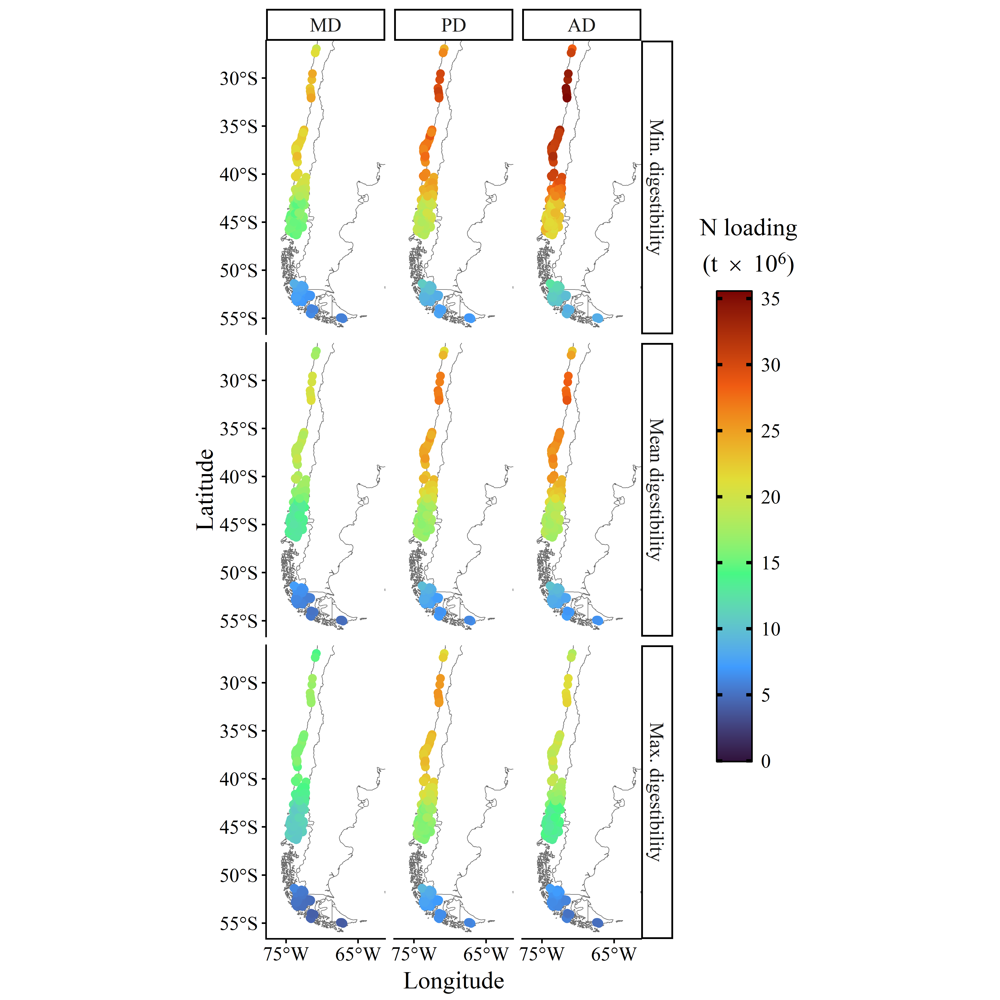
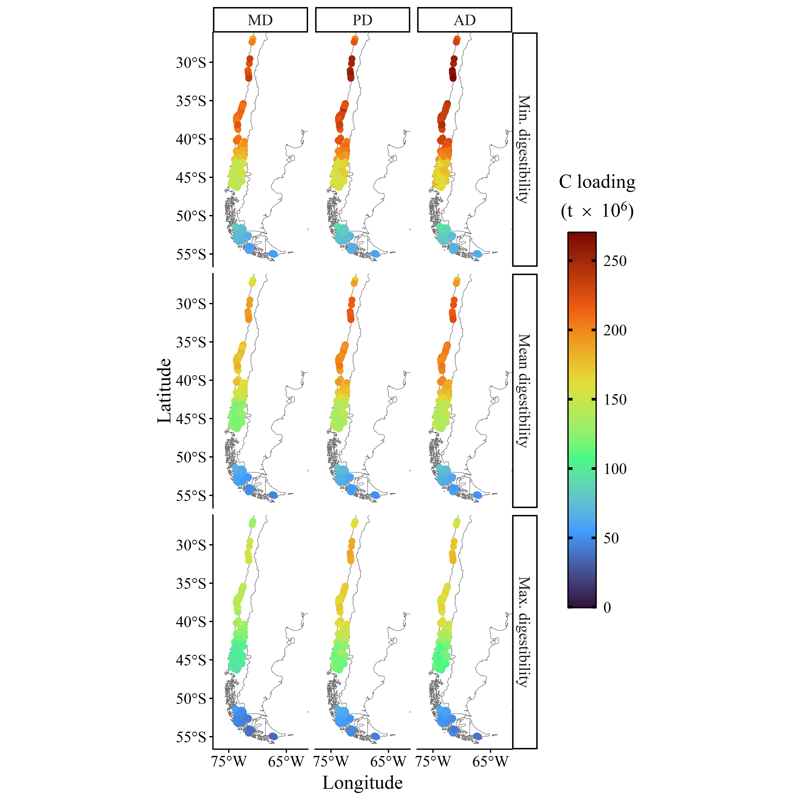
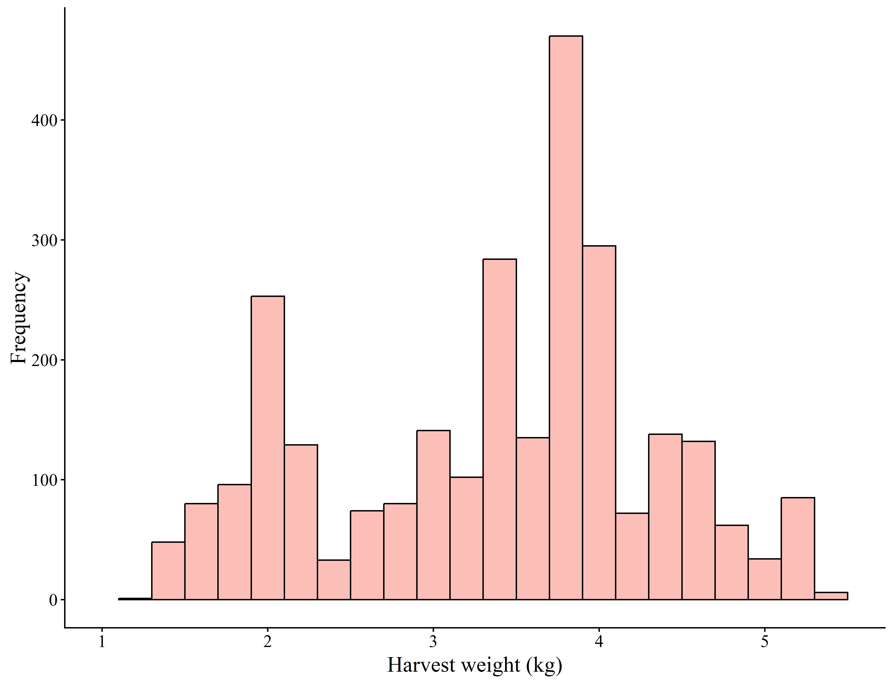

farm_locs <- file.path(input_farm_coords_path, "farm_static_data.qs") %>%
qread() %>%
rename(farm_ID = farm_id) %>%
mutate(
longitude = st_coordinates(geometry)[, 1],
latitude = st_coordinates(geometry)[, 2]
) %>%
mutate(
country = as.factor(country),
region = case_when(
country %in% c("Canada", "United States of America") & longitude < -100 ~ "North America (WC)",
country %in% c("Canada", "United States of America") & longitude < -50 ~ "North America (EC)",
country %in% c("Ireland", "United Kingdom") ~ "UK & Ireland",
country %in% c("Iceland", "Faroe Islands") ~ "Iceland & FI",
country %in% c("Norway", "Finland") ~ "Scandinavia",
country == "Australia" ~ "Australia",
country == "Chile" ~ "Chile",
country == "Russian Federation" ~ NA
) %>% as.factor()
)Figures for manuscript
1 Introduction
2 Get outputs
2.1 Total (summed) values
The total values describe selected output variables (measures) summed over the entire period of a salmon growing period (548 days). The data were generated from a suite of model runs which cover several dimensions:
- 2705 unique farms
- 3 different feed groups, representing different formulations of salmon feed: MD (marine-dominant), AD (animal-dominant) and PD (plant-dominant)
- 3 different feed types representing levels of digestibility of each of the three different feeds: mean digestibility, minimum digestibility, and maximum digestibility
The output values are expressed per biomass of salmon produced.
total_vals <- file.path(data_analysis_path, "total_vals.qs") %>%
qread()
total_props <- file.path(data_analysis_path, "total_props.qs") %>%
qread()
CN_vals <- file.path(data_analysis_path, "total_CN_vals.qs") %>%
qread()The structure of these data are as follows:
total_vals %>%
str()tibble [321,750 × 8] (S3: tbl_df/tbl/data.frame)
$ farm_ID : int [1:321750] 229 229 229 229 229 229 229 229 229 229 ...
$ feed_group : Factor w/ 3 levels "MD","PD","AD": 1 1 1 1 1 1 1 1 1 1 ...
$ feed_type : Factor w/ 3 levels "Minimum","Mean",..: 2 2 2 2 2 2 2 2 2 2 ...
$ measure : Factor w/ 13 levels "C_excr_stat",..: 1 2 3 4 5 6 7 9 12 13 ...
$ mean_per_biom: num [1:321750] 0.0527 0.00701 1.08853 0.02415 0.01179 ...
$ sd_per_biom : num [1:321750] 2.13e-08 2.84e-09 4.41e-07 9.78e-09 4.77e-09 ...
$ mean : num [1:321750] 8.04e+13 1.07e+13 1.66e+15 3.68e+13 1.80e+13 ...
$ sd : num [1:321750] 1575060 210675 32534752 721938 354169 ...total_props %>%
str()tibble [2,574,000 × 5] (S3: tbl_df/tbl/data.frame)
$ farm_ID : int [1:2574000] 229 229 229 229 229 229 229 229 229 229 ...
$ feed_group: Factor w/ 3 levels "MD","PD","AD": 1 1 1 1 1 1 1 1 1 1 ...
$ feed_type : Factor w/ 3 levels "Minimum","Mean",..: 2 2 2 2 2 2 2 2 2 2 ...
$ measure : Factor w/ 8 levels "prop_C_stat",..: 5 8 7 1 6 4 2 3 5 8 ...
$ mean_prop : num [1:2574000] NA NA NA NA NA NA NA NA NA NA ...CN_vals %>%
str()tibble [99,000 × 7] (S3: tbl_df/tbl/data.frame)
$ farm_ID : int [1:99000] 229 229 229 229 1854 1854 1854 1854 1855 1855 ...
$ feed_group : Factor w/ 3 levels "MD","PD","AD": 1 1 1 1 1 1 1 1 1 1 ...
$ feed_type : Factor w/ 3 levels "Minimum","Mean",..: 2 2 2 2 2 2 2 2 2 2 ...
$ measure : Factor w/ 2 levels "excr","total_lost": 1 1 2 2 1 1 2 2 1 1 ...
$ mean : num [1:99000] 9.88e+12 9.19e+13 1.27e+13 1.19e+14 1.89e+09 ...
$ mean_per_biom: num [1:99000] 9.88e+12 6.03e-02 8.35e-03 7.79e-02 1.89e+09 ...
$ nutrient : Factor w/ 2 levels "C","N": 2 1 2 1 2 1 2 1 2 1 ...3 Main text figures
nutrient_labels <- data.frame(
nutrient = levels(CN_vals$nutrient),
label = letters[1:2]
)
CN_vals %>%
filter(measure == "total_lost") %>%
mutate(mean_per_biom = mean_per_biom %>%
set_units("g g_fish-1") %>%
set_units("kg t_fish-1") %>%
drop_units()
) %>%
ggplot(aes(x = feed_type, y = mean_per_biom, fill = feed_group)) +
geom_boxplot(alpha = 0.7) +
scale_fill_manual(values = feed_pal) +
facet_grid(
rows = vars(nutrient),
scales = "free"
) +
geom_text(
data = nutrient_labels,
aes(x = -Inf, y = Inf, label = label),
hjust = -1, vjust = 1.5,
size = 6, fontface = "bold",
inherit.aes = FALSE
) +
labs(
x = "Feed digestibility",
y = expression("Nutrient loading (kg"~t[fish]^{-1}*")")
) +
prettyplot_600() +
theme(
legend.position = "none",
strip.text = element_blank(),
strip.background = element_blank()
)
CN_ratio_vals <- CN_vals %>%
left_join(farm_locs, by = "farm_ID") %>%
filter(measure %in% c("total_lost", "excr")) %>%
select(farm_ID, feed_group, feed_type, measure, mean, nutrient, country, region) %>%
pivot_wider(names_from = c(nutrient, measure), values_from = mean, names_sep = ".") %>%
mutate(
N.excr = N.excr/14.007,
N.total_lost = N.total_lost/14.007,
C.excr = C.excr/12.011,
C.total_lost = C.total_lost/12.011,
CN_ratio.excr = C.excr/N.excr,
CN_ratio.total_lost = C.total_lost/N.total_lost
) %>%
group_by(feed_group, feed_type) %>%
reframe(
CN_ratio_mean.excr = mean(CN_ratio.excr),
CN_ratio_sd.excr = sd(CN_ratio.excr),
CN_ratio_mean.total_lost = mean(CN_ratio.total_lost),
CN_ratio_sd.total_lost = sd(CN_ratio.total_lost)
) %>%
pivot_longer(
cols = contains("CN"),
names_to = c(".value", "measure"),
names_sep = "\\."
) %>%
mutate(measure = factor(measure, levels = c("excr", "total_lost")))
CN_ratio_vals %>%
ggplot(aes(x = feed_type, y = CN_ratio_mean, fill = feed_group, shape = measure)) +
geom_point(size = 4, position = position_dodge(width = 0.9), colour = "black") +
scale_fill_manual(values = feed_pal) +
scale_shape_manual(values = c("excr" = 21, "total_lost" = 24)) +
prettyplot_600() +
# theme(legend.position = "right") +
labs(x = "Feed digestibility", y = "C:N")
# CN_ratio_vals %>%
# select(-CN_ratio_sd) %>%
# pivot_wider(names_from = feed_type, values_from = CN_ratio_mean) %>%
# arrange(measure, feed_group)
data_basemap_C <- CN_vals %>%
filter(feed_type == "Mean", feed_group == "PD") %>%
merge(farm_locs, by = "farm_ID") %>%
mutate(
mean = set_units(mean, "g") %>% set_units("kg") %>% drop_units(),
mean_per_biom = set_units(mean_per_biom, "g g_fish-1") %>% set_units("kg t_fish-1") %>% drop_units()
) %>%
filter(measure == "total_lost" & nutrient == "C") %>%
st_as_sf(crs = 4326) %>%
st_transform(crs = "+proj=robin")
p_bigmap_robinson +
# p_bigmap_robinson_boxes +
geom_sf(
data = data_basemap_C,
aes(color = mean_per_biom, geometry = geometry),
size = 2
) +
coord_sf() +
scale_color_viridis_c(option = "turbo", breaks = seq(75, 115, 10), limits = c(75, 116)) +
guides(color = guide_colourbar(
title = expression(atop("C loading", paste("(kg"~t[fish]^{-1}*")"))),
direction = "vertical", position = "right",
label.position = "right", title.position = "top",
title.vjust = 1, title.hjust = 0.5,
frame.colour = "black", ticks.colour = "black",ticks.linewidth = 1,
barwidth = 1.5, barheight = 12,
)) +
labs(y = "Latitude", x = "Longitude") +
prettyplot_600() +
theme(legend.position = "bottom") +
remove_map_axes()
data_basemap_N <- CN_vals %>%
filter(feed_type == "Mean", feed_group == "PD") %>%
merge(farm_locs, by = "farm_ID") %>%
mutate(
mean = set_units(mean, "g") %>% set_units("kg") %>% drop_units(),
mean_per_biom = set_units(mean_per_biom, "g g_fish-1") %>% set_units("kg t_fish-1") %>% drop_units()
) %>%
filter(measure == "total_lost" & nutrient == "N") %>%
st_as_sf(crs = 4326) %>%
st_transform(crs = "+proj=robin")
p_bigmap_robinson +
# p_bigmap_robinson_boxes +
geom_sf(
data = data_basemap_N,
aes(color = mean_per_biom, geometry = geometry),
size = 2
) +
coord_sf() +
scale_color_viridis_c(option = "turbo", limits = c(9, 15)) +
guides(color = guide_colourbar(
title = expression(atop("N loading", paste("(kg"~t[fish]^{-1}*")"))),
direction = "vertical", position = "right",
label.position = "right", title.position = "top",
title.vjust = 1, title.hjust = 0.5,
frame.colour = "black", ticks.colour = "black",ticks.linewidth = 1,
barwidth = 1.5, barheight = 12,
)) +
labs(y = "Latitude", x = "Longitude") +
prettyplot_600() +
theme(legend.position = "bottom") +
remove_map_axes()

data_formap <- CN_vals %>%
filter(measure == "total_lost" & nutrient == "N") %>%
merge(farm_locs, by = "farm_ID") %>%
mutate(
mean = mean %>% set_units("g") %>% set_units("t") %>% drop_units(),
feed_type = factor(
feed_type,
levels = c("Minimum", "Mean", "Maximum"),
labels = c("Min. digestibility", "Mean digestibility", "Max. digestibility")
)
)
ggplot() +
geom_sf(data = worldmap_mercator, fill = "white", color = "dimgray") +
geom_sf(
data = data_formap,
aes(color = mean/10^6, geometry = geometry),
size = 2
) +
coord_sf(
xlim = inset_boxes_sm[["CHI"]][["xlims"]],
ylim = inset_boxes_sm[["CHI"]][["ylims"]]
) +
facet_grid(
rows = vars(feed_type),
cols = vars(feed_group)
) +
prettyplot_600() +
scale_color_viridis_c(
option = "turbo",
breaks = seq(0, 3.5e1, 5),
limits = c(0, 3.55e1),
) +
scale_x_continuous(breaks = seq(5, -92.5, -10)) +
guides(color = guide_colorbar()) +
guides(color = guide_colourbar(
title = expression(atop("N loading", paste("(t " %*% " 10"^6*")"))),
direction = "vertical", position = "right",
label.position = "right", title.position = "top",
title.vjust = 1, title.hjust = 0.5,
frame.colour = "black", ticks.colour = "black",ticks.linewidth = 1,
barheight = 20, barwidth = 1.5
)) +
labs(y = "Latitude", x = "Longitude") +
theme(legend.position = "right")
data_formap <- CN_vals %>%
filter(measure == "total_lost" & nutrient == "C") %>%
merge(farm_locs, by = "farm_ID") %>%
mutate(
mean = mean %>% set_units("g") %>% set_units("t") %>% drop_units(),
feed_type = factor(
feed_type,
levels = c("Minimum", "Mean", "Maximum"),
labels = c("Min. digestibility", "Mean digestibility", "Max. digestibility")
)
)
ggplot() +
geom_sf(data = worldmap_mercator, fill = "white", color = "dimgray") +
geom_sf(
data = data_formap,
aes(color = mean/10^6, geometry = geometry),
size = 2
) +
coord_sf(
xlim = inset_boxes_sm[["CHI"]][["xlims"]],
ylim = inset_boxes_sm[["CHI"]][["ylims"]]
) +
facet_grid(
rows = vars(feed_type),
cols = vars(feed_group)
) +
prettyplot_600() +
scale_color_viridis_c(
option = "turbo",
breaks = seq(0, 2.6e2, 50),
limits = c(0, 2.7e2),
) +
scale_x_continuous(breaks = seq(5, -92.5, -10)) +
guides(color = guide_colorbar()) +
guides(color = guide_colourbar(
title = expression(atop("C loading", paste("(t " %*% " 10"^6*")"))),
direction = "vertical", position = "right",
label.position = "right", title.position = "top",
title.vjust = 1, title.hjust = 0.5,
frame.colour = "black", ticks.colour = "black",ticks.linewidth = 1,
barheight = 20, barwidth = 1.5
)) +
labs(y = "Latitude", x = "Longitude") +
theme(legend.position = "right")

4 Supplementary figures
harvest_size <- file.path(gendata_path, "harvest_sizes", "farm_harvest_sizes.qs") %>%
qread()
harvest_size %>%
mutate(weight = weight %>% set_units("g") %>% set_units("kg") %>% drop_units()) %>%
ggplot(aes(x = weight)) +
geom_histogram(binwidth = 0.2, colour = "black", fill = "salmon", alpha = 0.5) +
scale_x_continuous(breaks = seq(0,6,1), limits = c(1,5.5)) +
prettyplot_600() +
labs(x = "Harvest weight (kg)", y = "Frequency")
sens <- file.path(output_sens_data_path, "sens_all.qs") %>%
qread()
param_names <- tibble::tribble(
~name, ~lab,
"alpha", bquote(alpha),
"epsprot", bquote(epsilon["P"]),
"epslip", bquote(epsilon["L"]),
"epscarb", bquote(epsilon["C"]),
"epsO2", bquote(epsilon["O"[2]]),
"pk", bquote("pk"),
"k0", bquote("k"[0]),
"m", bquote("m"),
"n", bquote("n"),
"betac", bquote(beta*"C"),
"Tma", bquote("T"["max"]),
"Toa", bquote("T"["opt"]),
"Taa", bquote("T"["min"]),
"omega", bquote(omega),
"a", bquote("a"),
"k", bquote("k"),
"eff", bquote("eff"),
"meanW", bquote(bar("W")),
"deltaW", bquote(Delta*"W"),
"meanImax", bquote(bar("I"["max"])),
"deltaImax", bquote(Delta*"I"["max"]),
"overFmean", bquote(bar("F")),
"overFdelta", bquote(Delta*"F"),
"mortmyt", bquote("mort")
)
sens %>%
# mutate(adj_param = factor(
# adj_param, levels = c("alpha", "epsprot", "epslip", "epscarb", "epsO2", "pk", "k0", "m", "n", "betac", "Tma", "Toa", "Taa", "omega", "a", "k", "eff", "meanW", "deltaW", "meanImax", "deltaImax", "overFmean", "overFdelta", "mortmyt", "nruns") %>% rev()
# )) %>%
filter(measure %in% c("weight_stat", "total_excr_stat") & adj_param != "nruns") %>%
mutate(measure = factor(measure, levels = c("weight_stat", "total_excr_stat"), labels = c("Ind. weight", "Total excreted"))) %>%
ggplot(aes(x = adj_param, y = mean_sens, ymin = mean_sens-sd_sens, ymax = mean_sens+sd_sens)) +
geom_col(colour = "black", fill = "salmon", alpha = 0.5) +
geom_errorbar(width = 0.5) +
coord_flip() +
scale_x_discrete(limits = rev(param_names$name), labels = rev(param_names$lab)) +
facet_wrap(~measure) +
prettyplot_600() +
theme(axis.title.x = element_blank())